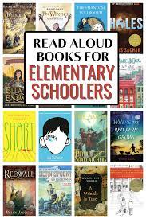
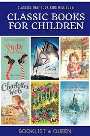

Item 1 : Science fiction Books

Science fiction books are a captivating and imaginative genre that explores speculative concepts often rooted in scientific principles, futuristic technologies, or alternate realities. These novels transport readers to distant worlds, envision advanced civilizations, and delve into the limitless possibilities of the universe. Characterized by a blend of scientific speculation and creative storytelling, science fiction books have the power to both entertain and provoke thought
Item 2 : Elementary Books
Elementary books cater to the learning needs of young readers, typically those in the early stages of primary education. These books are designed to engage children in the joy of reading while building fundamental literacy skills. Whether through vibrant illustrations, simple language, or interactive elements, elementary books play a crucial role in nurturing a love for reading and laying the groundwork for academic success.
Item 3 : Classic Books
Classic books represent enduring literary works that have stood the test of time, transcending the boundaries of their respective eras to resonate with readers across generations. These timeless pieces of literature are characterized by their profound themes, enduring characters, and masterful storytelling.